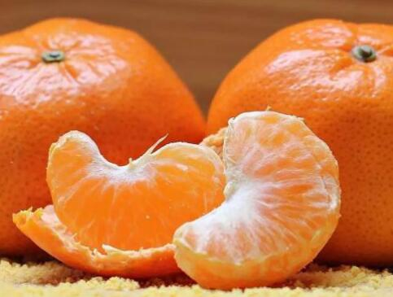

沙糖桔功效与食用禁忌须知
对于喜欢吃桔子的朋友们来说，沙糖桔算是一种人见人爱的桔子品种。它较之一般的桔子而言，糖分含量更高。从名字中就可以看出来，像吃了砂糖一样，可见这种桔子的味道和口感时非常好的。而且沙糖桔的个头比较小，吃一两个不会给身体造成负担，沙糖桔中含有丰富的维生素，还能提供人体所需的营养，有利于身体健康。
沙糖桔属于柑橘属，是一种适应性和生存能力比较强的水果。沙糖桔植株能在多种土壤环境中生存，正是因为它的这一特征，所以在我国的很多地方都有种植。其中比较著名的是云浮、桂林、广宁等地产的沙糖桔，被誉为当地的特产收到了全国各地人民的喜爱。

沙糖桔植株产果数量较多，且种植三年后就可以连年收成，果实相比于其他热带水果来说，比较易于贮藏。最重要的是沙糖桔口感非常好，酸甜可口，气味清香。所以也有很多地方称沙糖桔为“蜜桔”。
沙糖桔果实非常小巧可爱，外形为圆形或着扁圆形，橘黄色或着橘红色的外皮，根据品种的不同外皮的厚度也有一定的差异。
剥开果皮以后露出内部的桔子果肉，颜色是橙黄色的，色泽饱满。沙糖桔果肉的外皮很薄，能看到里面包含的果肉和汁水，在视觉上就给人一种刺激，让人忍不住流口水。根据科学测量可得知，每100毫升沙糖桔果汁中含有糖类物质10.55克，主要是果糖，其次是蔗糖和葡萄糖三类。除此之外，沙糖桔中还有丰富的维生素c、少量蛋白质、纤维素、脂肪、各类酸性物质以及胡萝卜素、钙、钠、镁等人体所需要的微量元素。
沙糖桔的营养物质含量是十分丰富的。所有的组合在一起形成了沙糖桔果肉脆嫩、酸甜多汁、甘甜清爽的特点。沙糖桔香气宜人，沁人心脾，桔子皮还能泡水喝或着作药用，所以收到的人们的喜爱也是理所当然的。
从中医角度来看，沙糖桔味甘甜，性温，能够润肺化痰，补血理气同时兼具健脾促消化的作用。而且沙糖桔酸甜可口，具有开胃的作用，对食欲不振、不思饮食有一定的效果。而沙糖桔的果皮，俗称陈皮，味辛苦，性温，具有调理脾胃肺经的功效，用陈皮泡水饮用，可以除燥湿，降火化痰。经过多年的临床实验和研究证明，陈皮具有药用效果，使许多中药汤剂中很重要的一种。能够治疗呕吐反胃、肺气不顺等问题。除此之外，沙糖桔还有一定的食疗功效，下面就带大家详细了解一下沙糖桔的营养价值和功效。
 上一篇
上一篇